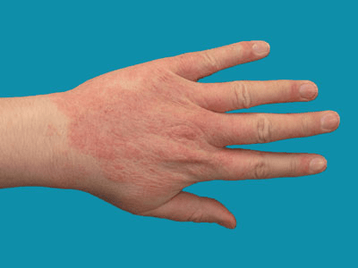

The words ‘dermatitis’ and ‘eczema’ are interchangeable and mean the same thing. Contact dermatitis, therefore, is the same thing as contact eczema.
For simplicity we will stick to the word ‘dermatitis’ in this leaflet.
Dermatitis means an inflammation of the skin. The term ‘contact dermatitis’ is used when this inflammation is
caused by contact with something in the environment.

There are several ways to treat contact dermatitis, including:
One of the most important steps in treating contact dermatitis is identifying and avoiding the allergens or
irritants that affect you. If you can successfully avoid or reduce your exposure to the cause, you shouldn't experience any symptoms.
It's not always easy to avoid irritants or allergens that affect you, but your GP or dermatologist (specialist in treating
skin conditions) can find ways to minimise your contact with them.
If you're exposed to irritants as part of your job, wear protective clothing to minimise any contact. Tell your employer
about your condition, so they can help you avoid the causes as much as possible.
Emollients are moisturising treatments applied directly to the skin to reduce water loss and cover it with a protective film.
They're often used to help manage dry or scaly skin conditions such as eczema.
Several different emollients are available. You may need to try a few to find one that works for you. You may also be
advised to use a mix of emollients, such as:
If your skin is very red, sore and inflamed, your GP may prescribe a topical corticosteroid (a cream or ointment applied
directly to your skin), which can quickly reduce the inflammation.
When used as instructed by your pharmacist or doctor, corticosteroids are a safe and effective treatment for contact dermatitis.
Different strengths of topical corticosteroids can be prescribed, depending on the severity of your contact dermatitis and where the affected skin is.
You may be prescribed:
If you have a severe episode of contact dermatitis and it covers a large area of your skin,
your doctor may prescribe corticosteroid tablets.
You may be prescribed steroid tablets to take for five to seven days. Depending on how effective this is, your dose may then be
may gradually reduced over two to three weeks.
If steroid tablets are taken often or for a long time, they can cause a number of side effects, such as:
If the treatments prescribed by your GP aren't successfully controlling your symptoms, they may refer you for
assessment and treatment by a dermatologist.
Further treatments that may be available from your dermatologist include: